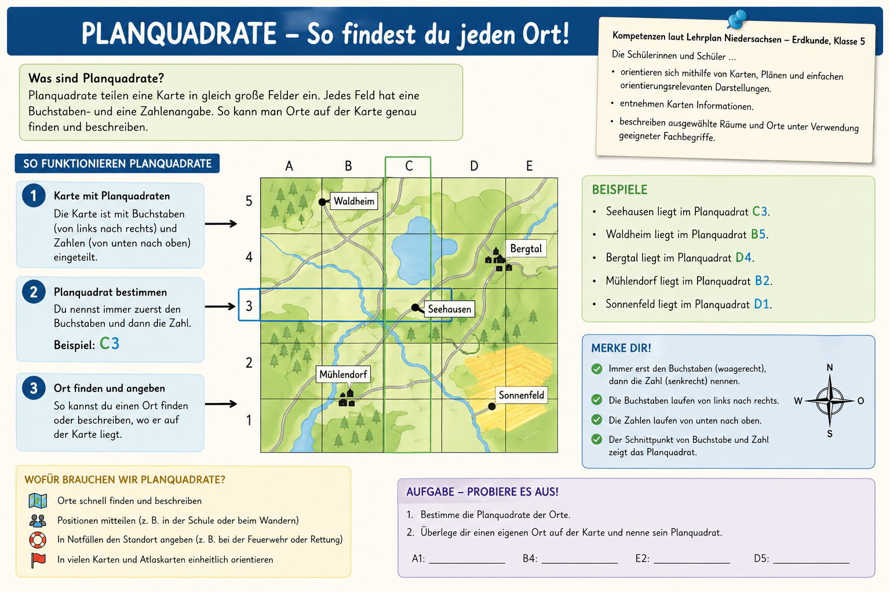

Das kannst du danach
- Planquadrate sicher als Buchstabe plus Zahl angeben.
- Orte ueber Koordinaten auf einer Karte finden.
- Einfache Wege als Folge von Planquadraten beschreiben.
- Typische Fehler bei Kartenarbeit vermeiden.
Erdkunde Klasse 5
In diesem Modul lernst du, Orte auf Karten schnell zu finden und eindeutig zu beschreiben. Du trainierst das Benennen von Planquadraten und das Erklaeren von Wegen entlang der Quadrate.
Immer erst der Buchstabe, dann die Zahl: Buchstaben laufen waagerecht von links nach rechts, Zahlen senkrecht von unten nach oben.
Das Thema gehoert zum Kompetenzbereich Orientierung im Raum. Du entnimmst Karten Informationen, beschreibst Orte mit Fachbegriffen und nutzt Darstellungen zur Orientierung.
Diese Grafik fasst die Grundlagen zusammen und zeigt Beispiele fuer die Angabe von Planquadraten.

Wenn du einen Weg beschreibst, nennst du die Quadrate in der Reihenfolge deines Weges: Startfeld, Zwischenfelder, Zielfeld.
Nutze diese Uebungskarte fuer die Aufgaben. Die Orte bleiben gleich, die Fragen wechseln.
Aufgabe wird geladen...
Aufgabe wird geladen...
Aufgabe wird geladen...
Tipp: Du kannst Pfeile, Kommas oder Leerzeichen als Trenner nutzen.
Der Test mischt Wissensfragen, Koordinatenaufgaben und eine Wegbeschreibung. Nach jeder Antwort bekommst du direkt Feedback.
Punkte: 0 / 10
Uebungskarte fuer den Test
Test noch nicht gestartet.